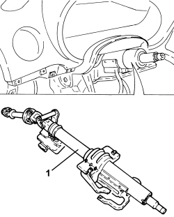
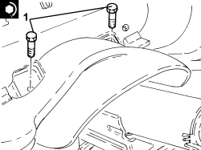
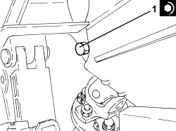

4110A30 SUPPORT WITH STEERING CONTROL SHAFTS - R+R
- Path
- Procedures > 41 STEERING UNIT > 4110 STEERING CONTROL AND LINKAGE > 4110A STEERING CONTROL > 4110A30 SUPPORT WITH STEERING CONTROL SHAFTS - R+R
- Kind
- repair procedure (removal / refitting; the operation number is the code)
- Applies to
- all engines; all production periods
- Interactive page
- https://sloeber94.github.io/elrnDB-aBrrSpdr/en/#/946002172
Applies to: all engines; all production periods
 Removing
Removing
 Refitting
RefittingOp. 5580C18 AIR BAG MODULE - R+R
Op. 4110A10 STEERING WHEEL - R+R FOR REPLACEMENT OR CHECKS
Op. 5580C23 DRIVE SIDE KNEE PROTECTION AIR BAG MODULE R. R.
Op. 7040A37 FUSE BOX COVER IN INSTRUMENT PANEL - R.R
Op. 5505A43 CONTROL UNIT (DIGITAL NETWORK NODE) IN DRIVER'S DOOR - R.R. WITH PANEL REMOVED
1. Undo the fixing bolt (1a) and disconnect the steering column (1b) from the steering box.

Applies to: all engines; all production periods
1. Unscrew the lower bolt securing the mount with the steering control shafts to the facia.

Applies to: all engines; all production periods
1. Unscrew the two upper bolts securing the mount with the steering control shafts to the facia.

Applies to: all engines; all production periods
1. Disconnect the electrical connection from the steering lock node.
Description | Connector | |
|---|---|---|
1 | Steering lock control unit (NBS) |

Applies to: all engines; all production periods
1. Remove the support and steering shaft assembly.

Applies to: all engines; all production periods
Refitting
Removing- Refit the support and steering shaft assembly.
- Connect the electrical connection to the steering lock node.
1. Tighten the two upper bolts securing the mount with the steering control shafts to the facia to the specified torque.
Component | Fastening | dia | Value (daNm) | Validity |
|---|---|---|---|---|
Support with steering control shafts | Bolt | M8 | (dashboard crossmember side) 2.2 - 2.6 |

Applies to: all engines; all production periods
1. Tighten the lower bolt securing the mount with the steering control shafts to the facia to the specified torque.
Component | Fastening | dia | Value (daNm) | Validity |
|---|---|---|---|---|
Support with steering control shafts | Bolt | M8 | (dashboard crossmember side) 2.2 - 2.6 |

Applies to: all engines; all production periods
1. Connect steering column (1a) to the power steering box pinion and secure by tightening a new bolt (1b) to the specified torque.
Component | Fastening | dia | Value (daNm) | Validity |
|---|---|---|---|---|
Steering column | Bolt (pretreated to be replaced) | M8 | (power assisted steering box side) 2.3 - 2.8 |

Applies to: all engines; all production periods
Op. 5505A43 CONTROL UNIT (DIGITAL NETWORK NODE) IN DRIVER'S DOOR - R.R. WITH PANEL REMOVED
Op. 7040A37 FUSE BOX COVER IN INSTRUMENT PANEL - R.R
Op. 5580C23 DRIVE SIDE KNEE PROTECTION AIR BAG MODULE R. R.
Topics linked from this page (6)
- 4110A10 STEERING WHEEL - R+R FOR REPLACEMENT OR CHECKS
- 5505A43 CONTROL UNIT (DIGITAL NETWORK NODE) IN DRIVER'S DOOR - R.R. WITH PANEL REMOVED
- 5580C18 AIR BAG MODULE - R+R
- 5580C23 DRIVE SIDE KNEE PROTECTION AIR BAG MODULE R. R.
- 7040A37 FUSE BOX COVER IN INSTRUMENT PANEL - R.R
- M089 STEERING LOCK CONTROL UNIT (NBS)